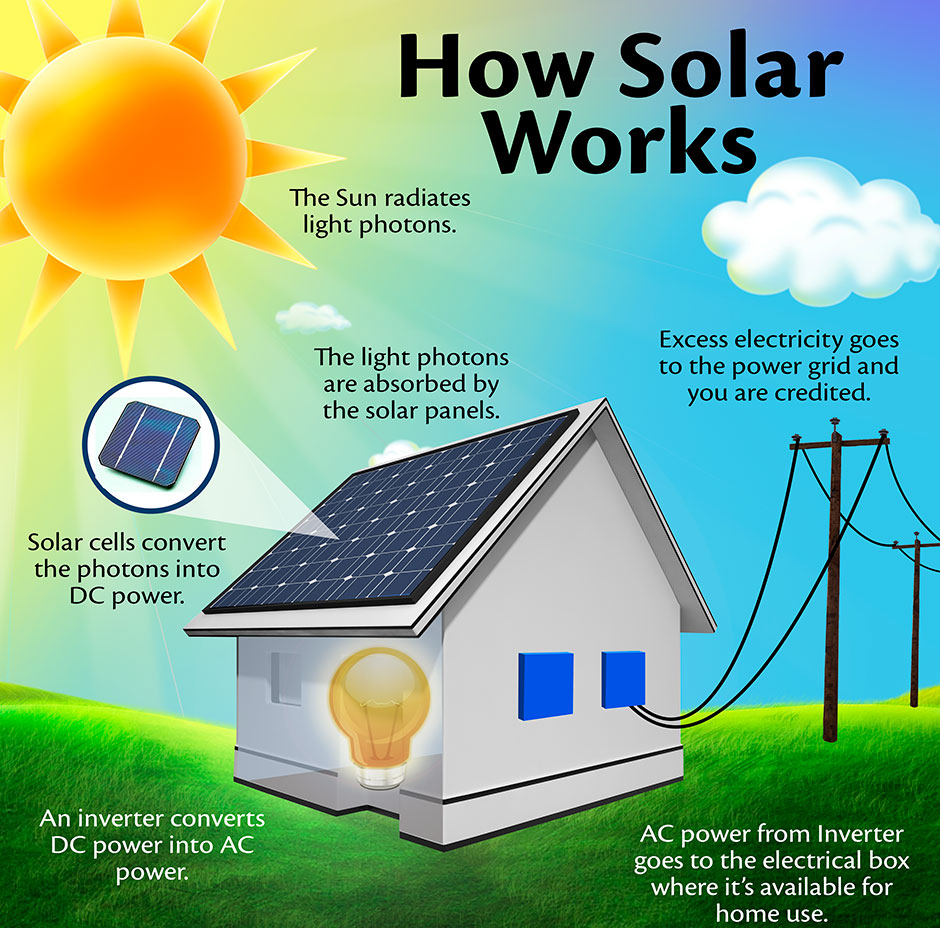

Solar energy is a renewable and sustainable form of energy derived from the sun's radiation. It is harnessed through the use of photovoltaic cells or solar panels, which convert sunlight into electricity. Additionally, solar energy can be captured in the form of heat using solar thermal systems. One of the most abundant and widely available sources of energy on Earth, solar power offers numerous advantages. It is clean and emits no greenhouse gases or harmful pollutants, contributing to the fight against climate change and reducing air pollution. Solar energy systems can be installed on rooftops, in solar farms, or in remote areas, providing access to electricity in regions with limited infrastructure. With continuous advancements in technology and decreasing costs, solar energy has become increasingly affordable and accessible. It offers long-term cost savings, particularly when integrated with energy storage systems, enabling energy to be stored for use during periods without direct sunlight. Solar energy plays a vital role in transitioning to a more sustainable energy future, reducing reliance on finite fossil fuels and contributing to energy independence. As countries and communities worldwide embrace this clean and abundant energy source, solar power has the potential to revolutionize the global energy landscape and foster a greener and more resilient planet for future generations.
The widespread adoption of solar photovoltaic (PV) technology has brought numerous benefits, but it also faces several challenges that need to be addressed to maximize its potential. Some of the main challenges associated with solar PV are:
some of the challenges include
Intermittency and Energy Storage: Solar PV generates electricity only when the sun is shining, making it intermittent. Energy storage solutions are needed to store excess energy during sunny periods for use during cloudy or nighttime hours.
Land Use and Space Requirements: Solar PV systems require a considerable amount of space, particularly for utility-scale installations. Balancing the need for clean energy with land conservation and other land-use priorities is a challenge.
Grid Integration and Stability: Integrating large amounts of solar PV into the existing grid infrastructure can present challenges in terms of grid stability, voltage regulation, and management of fluctuations caused by intermittent generation.
Read more on the Duck Curve Effect
Energy Losses and Efficiency: Energy losses during transmission and conversion can affect the overall efficiency of solar PV systems, impacting their economic viability.
Manufacturing Carbon Footprint: The carbon footprint associated with the manufacturing process of solar panels and other components is a consideration in evaluating the overall environmental benefits of solar PV.
As the root cause of the slow adoption of solar energy in emerging markets, While solar technology itself is easy to deploy and has reached a level of maturity, the lack of widespread storage deployments poses a significant challenge. Solar power's intermittent nature, dictated by weather conditions, necessitates effective energy storage solutions to guarantee continuous power availability and ensure grid stability. However, the scarcity of sufficient storage systems prevents solar energy from reaching its full potential and making a substantial impact in regions that require it the most, leading to continued reliance on traditional fossil fuels like diesel. The question then arises: Why isn't more storage being deployed in these markets? Several factors contribute to this issue, including the historically high costs associated with energy storage technologies, making it financially challenging for many economically constrained emerging markets to afford large-scale storage solutions. Additionally, infrastructure and grid limitations may hinder the seamless integration of renewable energy sources and storage systems. Regulatory and policy barriers, along with limited awareness and knowledge about the benefits of energy storage, also play a significant role in slowing down adoption. Overcoming these obstacles requires a multi-faceted approach and collaboration between various stakeholders. Governments and international organizations can provide financial incentives and subsidies to reduce the initial investment burden for storage projects. Favorable regulations and clear policies supporting renewable energy and energy storage are essential to encourage investments in this sector. Capacity building through training programs and workshops can enhance technical skills and knowledge related to energy storage deployment and integration. fortunately one prominent example of a company at the forefront of driving innovation in energy storage technologies is SAFT. As mentioned earlier, SAFT is actively working on the development of the next generation of advanced lithium-ion batteries. These batteries promise to unlock the full potential of solar energy by offering higher energy density, improved power capabilities, and addressing concerns related to raw material scarcity.
Introducing the SAFT Next-Generation Lithium-ion Batteries!
What are they?
SAFT is proud to present the new generation of advanced lithium-ion (li-ion) batteries. Just like traditional li-ion batteries, these innovative power sources store and release energy through the movement of lithium ions between the positive and negative electrodes via the electrolyte. However, what sets them apart is the revolutionary discovery of disruptive active materials that promise to shatter the existing energy limits of li-ion technology.
In the past, li-ion batteries relied on lithiated metal oxides or phosphates as positive materials and graphite or graphite/silicon or lithiated titanium oxides as negative materials. With the advent of our new compounds, positive and negative electrodes can now store more lithium, paving the way for the perfect synergy of energy and power. Additionally, SAFT's dedication to sustainability ensures that these advanced li-ion batteries consider the scarcity and criticality of raw materials, making them a responsible choice for the future.
What are their advantages?
The SAFT Next-Generation Lithium-ion Batteries stand at the forefront of energy storage technologies, boasting the highest level of energy density among all state-of-the-art solutions. Their cell design and various chemistries offer unparalleled performance tuning, enabling features like fast charging and an impressive temperature operating window of -50°C up to 125°C. Furthermore, these batteries exhibit exceptionally low self-discharge rates and an extended lifetime, with the capability to endure thousands of charging/discharging cycles.
When can we expect them?
Anticipate the deployment of SAFT's Next-Generation Lithium-ion Batteries ahead of the first-generation solid-state batteries. These cutting-edge power sources are ideally suited for a wide range of applications, particularly in Energy Storage Systems for renewable energy and various modes of transportation (marine, railways, aviation, and off-road mobility). When high energy, high power, and safety are crucial, these batteries will shine, opening up new possibilities for sustainable energy solutions. Embrace the future of energy storage with SAFT's latest breakthroughs!read more from saft.com
Unlike traditional systems, thin-film solar panels are very light and flexible second-generation cells. They are composed of multiple thin layers of photovoltaic, or PV, materials The layers are roughly 300 to 350 times thinner than standard silicon, which makes the technology ideal for portable devices. Each cell is made of three main parts: photovoltaic material, a conductive sheet and a protective layer. Other than their slim design, thin-film solar panels differ from traditional monocrystalline and polycrystalline panels in the materials used in production and in efficiency, but we’ll go more in-depth on this later.read more from ecowatch
Agrivoltaics, also known as agrophotovoltaics or solar sharing, is an innovative approach that combines the cultivation of crops or plants with the generation of solar energy. It involves installing solar panels or photovoltaic (PV) modules above agricultural fields or on structures within the farm, allowing for the dual use of the land for both farming and solar power production. In an agrivoltaic system, the solar panels are mounted at a height that allows sunlight to reach the crops or plants growing beneath them. The panels provide shade, reducing evaporation and helping to create a microclimate that can benefit the plants. Additionally, the panels generate clean electricity, which can be used on-site or fed into the grid Read more on Agrivoltaics and read more on agrivoltaic
Hybrid solar systems generate power in the same way as a common grid-tie solar system but use special hybrid inverters and batteries to store energy for later use. This ability to store energy enables most hybrid systems to also operate as a backup power supply during a blackout, similar to a UPS system
Traditionally the term hybrid referred to two generation sources such as wind and solar, but in the solar world, the term 'hybrid' refers to a system which uses a combination of solar and batteries that can interact with the electricity grid.
The solar panelsThese capture sunlight and convert it into electricity using photovoltaic cells.
Hybrid Solar Inverter A hybrid solar inverter is a device that manages the flow of electricity between the solar panels, batteries, and the connected loads. It has the capability to convert the DC electricity produced by the solar panels into AC electricity for use in the home or to feed excess power to the grid. Additionally, it can charge the batteries using excess solar energy.
Energy storage systemssuch as batteries, are an integral part of a hybrid solar system. They store excess electricity generated by the solar panels during the day, allowing you to use it at night or during periods of low solar production. The hybrid solar inverter controls the charging and discharging of the batteries, ensuring efficient energy management.
Meter A smart meter is an advanced utility meter that measures the electricity consumption and generation at your home. In the context of a hybrid solar system, a smart meter is used to monitor the energy flow and enable net metering. Net metering allows you to feed excess solar power back into the grid, and you receive credits or compensation for the energy supplied.
Loads These are the electrical devices and appliances in your home that consume electricity. The hybrid solar system powers these loads either directly from the solar panels, the batteries, or a combination of both. During times when solar production is low, or when demand exceeds solar generation, the system can draw power from the batteries or the grid if necessary.Read more on Hybrid system
Mobile storage systems, also known as mobile energy storage or portable energy storage, refer to energy storage solutions that can be easily transported and deployed at different locations as needed. These systems typically consist of batteries or other energy storage technologies integrated into a mobile unit, such as a trailer, container, or vehicle. Mobile storage systems offer several advantages and can help address specific challenges related to energy storage and power distribution:
Temporary Power Supply: Mobile storage systems can provide temporary power supply in areas without access to a stable grid or during emergency situations, such as natural disasters or remote construction projects.
Grid Support and Resilience: These systems can be deployed near areas experiencing high demand, supporting the grid during peak load periods or grid disruptions. They enhance grid resilience by providing backup power in case of grid failures.Read more on mobile-battery-energy
Absolutely! Artificial Intelligence (AI) and Machine Learning (ML) are revolutionizing the way we optimize energy production and consumption patterns, especially in the context of solar energy. These technologies offer powerful tools for analyzing vast amounts of data, identifying patterns, and making data-driven decisions to enhance the efficiency and effectiveness of solar power systems. Here's how AI and ML are transforming the solar energy sector:
Solar Energy Forecasting: AI and ML algorithms can analyze historical weather data, solar irradiance patterns, and other relevant factors to forecast solar energy generation with greater accuracy. These solar energy forecasts help grid operators and energy managers anticipate fluctuations in solar power output, allowing for better grid integration and improved energy planning.
Load Forecasting and Demand Response: AI and ML can analyze historical energy consumption data and other variables to predict future energy demand accurately. Load forecasting helps grid operators optimize energy distribution, while demand response strategies can be implemented based on real-time demand predictions, encouraging flexible energy consumption during peak solar generation periods.
Energy Storage Optimization: AI and ML techniques optimize energy storage operation by analyzing various factors, such as energy demand, solar generation patterns, and electricity prices. By considering these variables, energy storage systems can be efficiently managed to store excess solar energy during sunny periods and release it when solar generation decreases, enhancing grid stability and maximizing the utilization of renewable energy.
Smart Grid Management: AI and ML play a crucial role in smart grid management, enabling real-time monitoring, control, and optimization of various energy resources. These technologies help balance energy supply and demand, improve grid stability, and facilitate seamless integration of distributed energy resources, including solar power.
Predictive Maintenance: AI-powered predictive maintenance allows solar PV system operators to detect potential equipment failures or issues in real-time. By analyzing system data, AI can predict maintenance needs, reducing downtime and increasing the overall performance and reliability of solar installations.
Energy Efficiency and System Optimization: AI-driven optimization algorithms can fine-tune the operation of solar power systems, maximizing energy production and minimizing losses. This results in higher system efficiency and improved overall energy output.
Solar Panel Diagnostics: AI and ML techniques are used to assess the health and performance of individual solar panels. By analyzing data from multiple panels, AI can detect faults or degradation in specific panels, allowing for targeted maintenance and optimal performance.
Energy Trading and Peer-to-Peer Energy Sharing: AI and ML enable intelligent energy trading platforms, allowing prosumers to optimize their solar energy usage and sell excess energy to the grid or directly to consumers through peer-to-peer energy sharing systems.
By harnessing the power of AI and ML, solar energy stakeholders can make data-driven decisions, reduce operational costs, enhance energy efficiency, and better integrate solar power into the grid. As these technologies continue to evolve, they will play a crucial role in accelerating the transition to a more sustainable, efficient, and renewable energy future.Read more on AI and ML